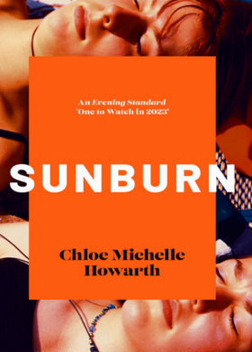
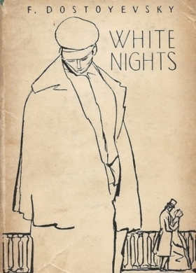
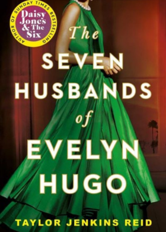
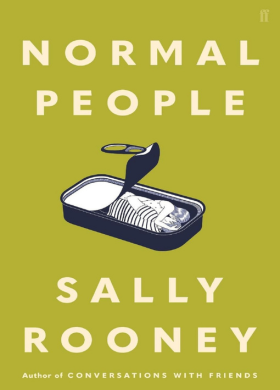
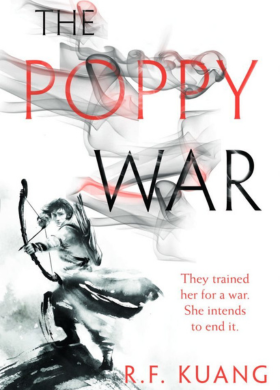
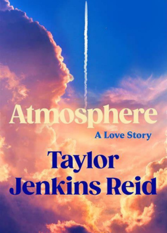
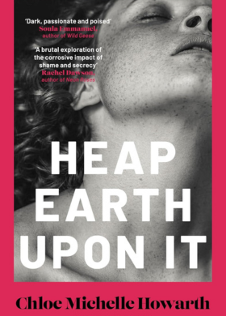

My favorite Books of 2025
Here are some of my favorite books this year - you can click to buy or learn more
-
Sunburn by Chloe Michelle Howarth
Sunburn is an astute and tender portrayal of first love, adolescent anxiety and the realities of growing up in a small town where tradition holds people tightly in its grasp. An atmospheric sapphic love story and coming-of-age novel with the intensity of Megan Nolan's Acts of Desperation, the long hot summer of André Aciman's Call Me By Your Name and the female friendships of Anna Hope's Expectation.
You seen to think I have all the power here, like I was going to decide not to want you anymore. I am powerless. If you want me, I am yours.
★★★★★ -
White Nights by Fyodor Dostoevsky
White Nights is a short story by Fyodor Dostoevsky that was published in 1848. Set in St. Petersburg, it is the story of a young man fighting his inner restlessness. A light and tender narrative, it delves into the torment and guilt of unrequited love. Both protagonists suffer from a deep sense of alienation that initially brings them together. A blend of romanticism and realism, the story appeals gently to the senses and feelings.
I am a dreamer. I know so little of real life that I just can’t help re-living such moments as these in my dreams, for such moments are something I have very rarely experienced. I am going to dream about you the whole night, the whole week, the whole year.
★★★★★ -
Seven Husbands of Evelyn Hugo by Taylor Jenkins Reid
'Riveting, heart-wrenching and full of Old Hollywood glamour' BuzzFeed 'This wildly addictive journey of a reclusive Hollywood starlet and her tumultuous Tinseltown journey comes with unexpected twists and the most satisfying of drama' PopSugar From the author of Daisy Jones & The Six in which a legendary film actress reflects on her relentless rise to the top and the risks she took, the loves she lost, and the long-held secrets the public could never imagine.
People think that intimacy is about sex. But intimacy is about truth. When you realize you can tell someone your truth, when you can show yourself to them, when you stand in front of them bare and their response is 'you're safe with me'- that's intimacy.
★★★★★ -
Normal People by Sally Rooney
Normal People is a story of mutual fascination, friendship and love. It takes us from that first conversation to the years beyond, in the company of two people who try to stay apart but find they can't.
I'm not a religious person but I do sometimes think God made you for me.
If people appeared to behave pointlessly in grief, it was only because human life was pointless, and this was the truth that grief revealed.
★★★★★ -
Yellowface by R.F.Kuang

White lies. Dark humor. Deadly consequences… Bestselling sensation Juniper Song is not who she says she is, she didn’t write the book she claims she wrote, and she is most certainly not Asian American—in this chilling and hilariously cutting novel from R.F. Kuang, the #1 New York Times bestselling author of Babel.
Writing is the closest thing we have to real magic. Writing is creating something out of nothing, is opening doors to other lands. Writing gives you power to shape your own world when the real one hurts too much.
★★★★★ -
The Poppy War: A Novel by R.F. Kuang
A brilliantly imaginative epic fantasy debut, inspired by the bloody history of China’s twentieth century and filled with treachery and magic.
But the misery she felt now was a good misery. This misery she reveled in, because she had chosen it for herself.
★★★★★ -
Atmosphere by Taylor Jenkins Reid
An epic novel set against the backdrop of the 1980s space shuttle program about the extraordinary lengths we go to live and love beyond our limits.
Happiness is so hard to come by. I don’t understand why anyone would begrudge anyone else for managing to find some of it.
★★★★★ -
Heap Earth Upon It by Chloe Michelle Howarth
January 1965. The orphaned O'Leary siblings - Tom, Jack, Anna and Peggy - arrive in the village of Ballycrea, tight-lipped about their troubled past and desperate for a fresh start. After being met with suspicion from most of the locals, the family are thrilled when they're taken under the wing of their well-respected neighbours, Bill and Betty Nevan, who offer them work, companionship and an opportunity to fit in.But for one of the O'Learys, this new friendship sparks an intense attachment that makes the dynamic dangerous for all. It's difficult to bury secrets, but almost impossible to bury feelings.
★★★★★
My Café Adventures
Here's a little summary of the cafés I've visited this year while reading my favorite books.
| Name | Author | Genre | Rating |
|---|---|---|---|
| Daisy Jones & The Six | Taylor Jenkins Reid | Historical Fiction | ★★★★★ |
| They Both Die at the End | Adam Silveira | LGBT literature | ★★★★★ |
| Gone Girl | Gillian Flynn | Suspense | ★★★★☆ |
| Conversation with friends | Sally Rooney | Novel | ★★★☆☆ |
| Blue Sisters | Coco Mellors | Urban fiction | ★★★★★ |
| Tudo é Rio | Carla Madeira | Romance Novel | ★★★★☆ |
| The Butterfly Garden | Dot Hutchison | Thriller | ★★★★★ |